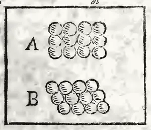
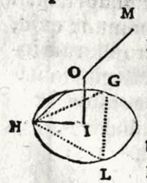
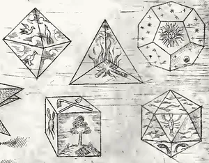
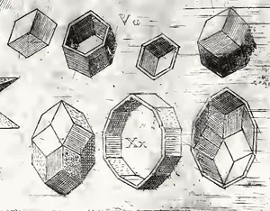
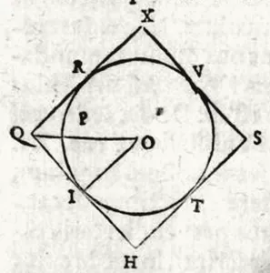

Content of type 'la'
Epistola ad Michaelem Mästlinum (Oct. 1597) — Triangulum Kepleri
Si in linea, quae est secta extrema et media ratione, construatur triangulum rectangulum ex partibus et tota, ita ut subtensa recto sit maior pars vel tota, tunc quadratum unius lateris cum quadrato alterius componit quadratum subtensae, et tria latera sunt continue proportionalia.
Praeambulum & Ratio Ordinis
IO. KEPLERI HARMONICES MUNDI LIBER IV. DE CONFIGURATIONIBUS HARMONICIS RADIORUM SIDERALIUM IN TERRA, EARUMQUE EFFECTU IN CIENDIS METEORIS, ALIISQUE NATURALIBUS.

Praefatio ad Lectorem (De Inventione Graecensi, 19 Julii 1595)
Propositum est mihi, Lector, hoc opusculo demonstrare, quod Creator Optimus Maximus in mundi huius mobilis creatione et coelorum ordine disponendo ad illa quinque regularia corpora, quae a Pythagora et Platone in hunc usque diem tantam celebritatem sunt adepta, respexerit, atque ad illorum naturam coelorum numerum, proportiones et motuum rationem accommodaverit.
Prooemium
Cum a divisionibus circuli in partes aliquotas aequales, quae fiunt Geometrice & scientifice, hoc est, a figuris planis Regularibus demonstrabilibus, sint nobis petendae causae Proportionum Harmonicarum; illud initio significandum duxi, differentias rerum Geometricarum mentales, hodie, quantum apparet ex libris editis, in solidum ignorari. Adeoque ne ex veteribus quidem, qui has specificas rerum Geometricarum differentias se exacte cognovisse significaverit, praeter Euclidem, ejusque comentatorem Proclum, quisquam occurrit. Pappi quidem Alexandrini, veterumque, quos ille sequitur, distributio Problematum, in Plana, Solida & Linearia, satis est apposita ad habitus mentis circa unamquamque subjecti Geometrici partem orientes, explicandos: illa tamen & brevis est verbis, & ad praxin applicata; de theoria nulla fit mentio: & vero nisi tota mente in theoria hujus rei occupemur, nunquam assequi poterimus rationes harmonicas. Proclus Diadochus, libris quatuor in primum Euclidis editis (In Euclidem), Philosophum Theoreticum in mathematico subjecto ex professo egit; qui si comentaria sua in decimum etiam librum Euclidis nobis reliquisset, & nostros Geometras inscitia liberasset non neglectus, & me labore hoc explicandi rerum Geometricarum differentias in solidum sublevasset. Satis enim illi cognita fuisse discrimina ista Entium Mentalium, ex ipso exordio facile apparet, cum principia totius essentiae Mathematicae statuit eadem, quae etiam per omnia Entia vadunt, omniaque a se gignunt, Finem scilicet & Infinitum: seu Terminum & Interminatum: terminum vel circumscriptionem pro Forma, interminatum pro Materia agnoscens rerum Geometricarum.
Prooemium et Definitiones — De Congruentia Figurarum Harmonicarum
Essentiam singularium Figurarum Regularium Mentalem seu νοητὴν hactenus explicavi: sequitur earum junctarum Proprietas, et veluti Effectus intra Geometriam, qui est Congruentia vel Insociabilitas. Non sunt enim ejusdem latitudinis, Demonstrabilitas et Congruentia, cùm illa singularum sit, et cum ipsâ duplicatione continuâ laterum unius figurae in infinitum excurrat; ista certis coarctata legibus, quibus plures figurae in unam societatem vocantur, ob angulorum incrementa seipsam praepediens, citò desinat. Et quamvis delectus sit graduum scientiae demonstrativae, et plurimùm differant nobilitate, illae quas nos explicavimus, ab iis quas dimisimus sine nomine: non tamen ne cum hac quidem demonstrationis nobilitate, Congruentia planè pari passu ambulat: adeoque unum alterius causa non est, sed utrumque ex eadem communi causa (quae est angulorum figurae aptitudo), quodque tamen suis legibus, dependet.
Prooemium — De Causis Harmonicarum Proportionum & Ptolemaei Harmonica
De ortu proportionum harmonicarum, deque natura & differentiis rerum ad cantum pertinentium.
Sectio I: Ad Illustrem D. Ioannem Matthaeum Wackherium a Wackenfels — De Stella Nivea
Ad Illustrem S. C. Maiest. Consiliarium Imperialem Aulicum, D. Ioannem Matthaeum Wackherium a Wackhenfels, Equitem Auratum, &c. Literatorum & Philosophorum Maecenatem Dominum meum beneficum.
Caput I — De Essentia Proportionum Harmonicarum tam Sensilium quam Intellectualium
De Harmoniarum essentia disputaturo mihi dubitare contingit; utrum clarius sit, veterum sententias primum exquirere, deinde cum mea comparare; an ab expositione propriae sententiae incipere. Prior philosophandi ratio recepta est ab omnibus, & crebro commendatur ab Aristotele: posterior magis convenire videtur praesenti materiae. Disputationes enim de Essentia Harmoniarum in specie pauci attigerunt: & si qua dixerunt de subsistentia Generum & specierum Mathematicarum, quod Harmoniis in specie possit applicari; id necesse est in philosophia Gentilium obscuritatis esse plenum; eoque lectoris animum inter amorem speciosissimorum dogmatum & suspicionem fictae rei fluctuare dubium. In coetibus Christianorum, & si quis sacrosanctum Trinitatis Mysterium, ortumque rerum omnium ex historia Mosaica, firma fide amplectitur; disputationis capita & clarius proponi possunt, & procliviores inveniunt lectorum animos ad credendum. Ut igitur methodum dicendorum expediamus, a divisione incipiendum erit. Aliud enim est Harmonia sensilis, vel ei analoga, aliud Harmonia secreta & pura a rebus sensilibus: illae multae sunt, tam ratione subjectorum, specie differentium, quam ratione individuorum: at sincera Harmonia & a subjectis sensibilibus secreta, in qualibet specie una est & eadem. Verbi causa, est una & eadem species Harmoniae, quae a proportione dupla oritur: haec si inest in sonis, Diapason dicitur; si in radiationibus, Aspectus Oppositus nuncupatur: & in Musico quidem systemate vel superior est vel inferior, vel acutior vel gravior, vel vocum humanarum, vel sonorum ex organis: nec minus in Meteorologia est multiplex; vel enim Saturni & Jovis vel alterius copulae, & vel ex signis aequinoctialibus vel ex Tropicis.

Caput I — Quibus Rationibus Copernici Hypotheses Fiant Consentaneae
Quibus rationibus Copernici hypotheses fiant consentaneae. Et explicatio hypothesium Copernici.
Definitio I — De Figura Plana Regulari
Plana Figura regularis illa dicitur, quae omnia latera & omnes angulos extrorsum versos, aequales habet.

Liber V, Caput III, Propositio VIII — Proportio Sesquialtera (Lex Tertia)
Octavo hactenus egimus de diversis moris vel arcubus unius & ejusdem Planetae. Jam etiam de binorum Planetarum motibus inter se comparatis agendum. Ubi nota definitionem Terminorum, qui sunt nobis futuri necessarii. Apsides proximas duorum planetarum dicemus Perihelium superioris, & Aphelium inferioris: non obstante, quod illae vergunt in plagam Mundi, non eandem, sed diversas, & forte contrarias. Motus extremos, intellige, tardissimum & velocissimum totius circuitus Planetarii. Convergentes extremos seu Conversos, qui sunt in binorum Apsidibus proximis, scilicet in Perihelio superioris, & Aphelio inferioris: Divergentes vel Diversos, qui in Apsidibus oppositis, scilicet Aphelio superioris & Perihelio inferioris. Rursum igitur hic aliqua pars mei Mysterii Cosmographici (1596), suspensa ante 22. annos, quia nondum liquebat, absolvenda, & huc inferenda est. Inventis enim veris Orbium intervallis, per observationes Brahei, plurimi temporis labore continuo, tandem, tandem, genuina proportio Temporum periodicorum ad proportionem Orbium — sera quidem respexit inertem,
Sectio II: De Apum Alveolis & Inventione Duorum Corporum Rhombicorum
Si ex Geometris quaeras, quo ordine structi sint Apum alveoli, respondebunt, ordine sexangulo. Simplex est responsio ex intuitu simplici foraminum seu portarum, laterumque, quibus efformantur alveoli. Circumstant enim alveos singulos, sex alii, singulis lateribus de intermedio singuli communicantes. At ubi fundos alveorum fueris contemplatus, singulos trinis planis in obtusum descendere videbis angulum. Fundum hunc, (carinam potius nuncupes) cum senis alveoli lateribus copulant sex alii anguli, tres altiores trilateri, planeque similes imo carinae angulo, tres humiliores quadrilateri interiecti. Praeterea considerandum est geminum esse Alveolorum ordinem, portis aversis in contraria, posticis inter se contiguis & stipatis, angulis carinarum singularum ordinis unius, inter angulos tres trium carinarum ordinis alterius insertis, ea arte, ut alveus quilibet non tantum sex lateribus communicet cum senis al-

Caput II — Primaria Demonstrationis Delineatio
Primaria demonstrationis delineatio.
Caput II — Quot Qualesque Sint Animae Facultates Secundum Harmonias
Diximus hactenus de proportionibus harmonicis, quid illae sint, & ubi consistant: neque dum nobis videmur attigisse quaestionem instituto nostro convenientem; quod non tam in ipsis proportionibus harmonicis, quam in facultate Animae harmonica, scilicet agendi secundum proportiones, versatur. Hactenus igitur de
Caput IV — In Quibusnam Rebus Motuum Extremorum Consonent Harmoniae
CAPUT IV. Quibus in rebus ad motus Planetarum pertinentibus, expressae sint a Creatore proportiones Harmonicae, & quomodo?
Definitio II — Figurae Primae ac Radicales, et Auctae seu Stellae
Earum quaedam sunt primae & radicales, quae suos ipsae terminos non excedunt, quibus proprie convenit posita definitio: quaedam sunt auctae, quae sua veluti latera excedunt, continuatis alicujus radicalis lateribus non contiguis, ad concursum: dicuntur Stellae.

Sectio III: De Malo Granato & Coaptatione Globulorum Arctissima
Nam si errantes in eodem plano horizontali globulos aequales coegeris in angustum, ut se mutuo contingant; aut triangulari forma coeunt, aut quadrangulari; ibi sex unum circumstant, hic quatuor: utrinque eadem est ratio contactus per omnes globulos, demptis extremis.
Caput III — Quae Sint Genera Τῶν Ἡρμοσμένων
Quae sint Genera τῶν ἡρμοσμένων, hoc est, rerum seu sensilium seu immateriatarum; in quibus expressae sunt Harmoniae, sive a Deo, sive ab homine, & quomodo?
Caput III — Quod Haec Quinque Corpora in Duos Ordines Distinguantur
Quod haec quinque corpora in duos ordines distinguantur; et quod terra recte locata sit.

Caput V — Quod in Systemate Musico Claves & Tonorum Loca Motibus Expressa Sint
CAPUT V. In Proportionibus motuum Planetariorum apparentium (ex Sole veluti spectantibus) expressa esse Loca Systematis, seu Claves Scalae Musicae, & genera cantus, Duri & Mollis.
Definitio III — Figurae Semiregulares
Semiregulares sunt, quae angulos variantes, latera quatuor habent aequalia; ut Rhombi \(NMPO\); \(GEKD\).
Propositio XVI — Summa Angulorum in Plano 4 Recti, in Solido Minor
XVI. Propositio.
Sectio IV: De Floribus Quinquefoliis & Nive Sexangula
Contra si quaeratur, cur omnes adeo arbores et frutices, (aut certe pleraeque) florem explicent forma quinquangulari, numero scilicet foliorum quinario, quem florem in pomis et pyris sequitur fructus dispositio, in eodem vel cognato numero, quinario vel denario: quini intus loculi continendis seminibus, dena filamenta: quod et obtinet in cucumeribus et id genus aliis: hic inquam locum habet speculatio pulchritudinis aut proprietatis figurae, quae animam harum plantarum characterisavit. Et detegam obiter cogitationes meas super hac re.
Caput IV — Quare Tria Corpora Terram Ambiant, Duo Reliqua Induant
Quare tria corpora terram ambiant, duo reliqua induant?
Caput IV — Quid Discriminis sit inter Harmonias Quarto et Tertio Libro Consideratas
Quid discriminis sit inter Harmonias quarto, & inter illas tertio libro consideratas.

Caput VI — In Extremitatibus Motuum Planetariorum Expressos Esse Modos Seu Tonos Musicos
CAP. VI. In Extremitatibus motuum Planetariorum expressos esse quodammodo Modos seu Tonos Musicos.
Propositio IV — Inscriptio in Unum Circulum
Omnes figurae Regulares angulis suis omnibus simul eidem circulo possunt insistere.
Propositio XVII — Figura Imparilatera Duarum Specierum
XVII. Propositio.

Caput V — Quòd Cubus Primum Corporum, et Inter Altissimos Planetas
Quod cubus primum corporum, et inter altissimos planetas.

Caput VII — De Harmoniis Universalibus Omnium Sex Planetarum
CAPUT VII. Harmonias universales omnium sex Planetarum, veluti communia Contrapuncta, quadriformia dari.
Definitio V — Describere Figuram
Describere Figuram, est proportionem linearum angulis subtensarum, ad anguli crura geometrico actu determinare; ex determinatis, triangula figurae Elementaria construere, ex triangulis coassatis, figuram ipsam perficere.
Propositio XVIII — Tria Sola Plana Uniformia Ex Una Specie
XVIII. Propositio.

Caput VI — Quòd Inter Iovem et Martem Pyramis
Quod inter Iovem et Martem Pyramis.
Caput VIII — Quatuor Vocum Coelestium Officia in Cantu Sphaerarum
CAPUT VIII. Quis in concordantiis coelestibus Discanti, quis Alti, quis Tenoris, quis Bassi vicem obeat?
Definitio VI — Inscribere Figuram Circulo
Inscribere Figuram circulo, est proportionem lateris figurae ad diametrum circuli, cui est inscribenda, Geometrico actu determinare, qua constituta proportione, facile in circulo figura proposita delineatur.

Propositio XIX — Sex Modi Impletionis Plani Ex Duabus Speciebus
XIX. Propositio.
Caput IX — Ortus Eccentricitatum ex Procuratione Harmoniarum
CAPUT IX. Ortus Eccentricitatum in Planetis singulis ex procuratione Harmoniarum inter eorum motus.
Caput VII — De Secundariorum Ordine et Proprietatibus
De secundariorum ordine et proprietatibus.

Definitio VII — Quid sit Scire in Geometricis
Scire in geometricis, est mensurare per notam mensuram; quae mensura nota in hoc negotio inscriptionis Figurarum in circulum, est diameter circuli.
Caput VIII — Quòd Octaedron Sit Intra Venerem et Mercurium
Quod Octaedron sit intra Venerem et Mercurium.
Definitio VIII — Quid sit Scibile (γνώριμον)
Scibile dicitur, quod vel ipsum per se immediate est mensurabile per diametrum, si linea; vel per ejus quadratum, si superficies: vel quod formatur ad minimum ex talibus quantitatibus, certa & geometrica ratione, quae quantumcunque longa serie, tandem tamen a Diametro, ejusve quadrato dependeant. Graece dicitur γνώριμον.

Figura Aa — De Congruentia Pentagoni, Decagoni et Stellae Quinquangulae
(Ex Propositione XIX, ad literas Z et Aa)
Caput IX — Distributa Corpora Inter Planetas et Proprietates Aptatae
Distributa corpora inter Planetas, proprietates aptatae, demonstrata ex corporibus cognatio planetarum mutua.
Definitio IX — Demonstratio (Πόριμα)
Demonstratio est quantitatis vel describendae vel sciendae, ex Diametro deductio, per intermedia possibilia, Graece Πόριμα.
Propositio XXI — Quatuor vel Plurium Specierum Impossibilitas
XXI. Propositio.
Axioma XXII — De Tribus Angulis Planis
XXII. Axioma.
Caput X — De Origine Numerorum Nobilium
De origine numerorum nobilium.

Definitio X — Propria Demonstratio
Propria demonstratio est, cum numerus angulorum Figurae vel ipsius, vel ei cognatae numero laterum duplo aut dimidio, fit medius terminus ad determinandam proportionem lateris, quam id habet ad Diametrum.

Caput XI — De Situ Corporum et Origine Zodiaci
De situ corporum, et origine Zodiaci.
Definitio XI — Impropria Demonstratio
Impropria demonstratio est, cum proportio lateris ad diametrum ex ipso angulorum numero immediate adhibito nequit determinari Geometrice, nisi adhibeatur latus figurae alterius, non duplo aut dimidio numero laterum.
Propositio XXIII — Duo Anguli Imparilaterae Cum Tertio
XXIII. Propositio.
Caput XII — De Consonantiis Adulterinis
CAPUT XII.

Caput XII: Divisio Zodiaci, et Aspectus
Multi divisionem Zodiaci in duodecim praecisa signa pro figmento humano habuere, tali nempe, cui nihil rei naturalis subsit. Neque enim haec μόρια viribus aut affectionibus differre naturalibus arbitrantur: sed as-
Definitio XII — Primus Scientiae Gradus
Gradus scientiae diversi sunt, alii remoti, alii propinqui. Primus & proximus gradus, cum lineam aliquam scio & demonstrare possum, esse diametro aequalem, aut planum, licet aliter formatum, quadrato diametri aequale.
Propositio XXIV — Tres Anguli Trium Specierum Cum Una Imparilatera
XXIV. Propositio.


Caput XIII: De computandis orbibus qui corporibus inscribuntur, et circumscribuntur
Hactenus nihil dictum, nisi consentanea quaedam signa, et εἰκότα suscepti Theorematis. Transeamus modo ad ἀποστήματα orbium Astronomiae et demonstrationes Geometricas: quae nisi consentiant, procul dubio omnem praecedentem operam luserimus. Primum omnium videamus, in quanta proportione sint orbes singulis his quinque corporibus regularibus inscripti ad circumscriptos.
Definitio XIII — Secundus Gradus (Effabilis Longitudine, ῥητὴ μήκει)
Secundus gradus, cum diametro in aliquot partes aequales certo numero divisa, vel ejus quadrato similiter, linea vel planum propositum aequatur tali parti vel partibus. Talis linea dicitur Graece ῥητὴ μήκει Effabilis longitudine. Planum vero tale simpliciter dicitur ῥητὸν, Effabile. Numerus enim est Geometrarum sermo.

Propositio XXV: Quinque Corpora Regularia
XXV. Propositio.


Caput XIV: Primarius scopus libelli, et quod haec quinque corpora sint inter orbes, Astronomica probatio
Primarius scopus libelli, & quod haec quinque corpora sint inter orbes, Astronomica probatio.
Definitio XIV — Tertius Gradus (Effabilis Potentia, ῥητὴ δυνάμει)
Tertius Gradus est hic, cum linea longitudine est Ineffabilis, at ejus quadratum Effabile, & pertinens ad secundum gradum. Dicitur ῥητὴ δυνάμει, Effabilis potentia.

Propositio XXVI: Duo Corpora Regularia Stellata
XXVI. Propositio.

Caput XV: Correctio distantiarum, et diversitas prosthaphaereseon
Correctio distantiarum & diversitas prosthaphaereseon.
Definitio XV — Quartus Gradus (Mese, μέση)
Qui sequuntur gradus, omnes appellantur Ἄλογοι, Ineffabiles. Interpretes Latini verterunt, Irrationales, magno ambiguitatis & absurditatis periculo. Nos sepeliamus hunc vocis usum, quia multae sunt lineae, quae quamvis Ineffabiles, optimis tamen continentur rationibus. Arithmetici consimili translatione appellant Numeros surdos, id est, qui non plus loquuntur quam surdus audit: sed sub hoc nomine tam Effabiles sola potentia, quam ineffabiles quantitates intelligunt. Est igitur quartus in ordine gradus, primus vero ineffabilium, quando nec linea, nec ejus quadratum sunt Effabilia; sed tamen Quadratum in tale Rectangulum transformari potest, cujus latera sint Effabilia saltem potentia. Haec linea dicitur MESE, quia est media proportionalis inter duas Effabiles sola potentia commensurabiles: ut si una quidem sit Effabilis longitudine, altera sola potentia; aut si utraque sola potentia Effabilis, potentiae tamen inter se non sint ut quadratus numerus ad quadratum.

Propositio XXVII: Duo Corpora ex Rhombis
XXVII. Propositio.
Caput XVI — De Luna Peculiare Monitum, et De Materia Corporum
De Luna peculiare monitum, & de materia corporum & orbium.
Definitio XVI — Copulatio Linearum Binarum
Ad lineas alias singulares transitus est nobis, per copulationem linearum binarum, quae ipsae quoque novos gradus scientiae interponunt. Secetur nimirum vel diameter, vel aliqua diametro commensurabilis saltem potentia & sic Effabilis, aut etiam aliqua Mese; secetur inquam in partes duas inaequales, aut conferantur ex duarum talium sectionibus, duae quaecunque partes, vel compositae ex partibus, vel compositas potentias, diminutasve, ex talibus habentes, duae inquam in genere inaequales: illae aut erunt longitudine commensurabiles inter se; aut incommensurabiles quidem longitudine, commensurabiles vero potentia. Hic quamvis a commensuratione plane recesserunt singulae, at junctae tamen nonnullae adhuc vel quadratis in unam summam collatis, vel Rectangulo communiter formato, constituunt plana hacte-

Propositio XXVIII: Tredecim Corpora Archimedea
XXVIII. Propositio.

Caput XVII — Aliud De Mercurio Monitum
Aliud de Mercurio monitum.
Definitio XVII — Quintus Gradus
Sit ergo quintus scientiae gradus, Cum duae nec Effabiles ambae, nec MESAE, ampliusque inter se plane incommensurabiles, utrumque faciunt Effabile, & summam quadratorum, & commune Rectangulum: non minus quam utrumque horum faciunt duae longitudine Effabiles, per 20. decimi Euclidis, vel etiam duae sola potentia effabiles, sed inter se tamen longitudine commensurabiles, per eandem. Ut latus de quadrato 2. & latus de quadro 8. sunt inter se in proportione dupla, quia quadra sunt inter se in proportione quadrupla. Sunt ergo longitudine quidem Ineffabiles, at inter se commensurabiles. Earum quadrata 2. & 8. juncta faciunt 10. Effabile planum. Et ipsae in se multiplicatae (quod est Rectangulum formare) faciunt rectangulum 4. etiam effabile. Hoc idem inquam, faciunt etiam duae nec Effabiles nec Mesae, ampliusque inter se plane incommensurabiles: eoque non, ut priores illae, in secundum vel tertium gradum scientiae sunt referendae, sed in Quintum.
Caput XVIII — De Discordia Prosthaphaereseon et Astronomiae Subtilitate
De discordia προσθαφαιρέσεων ex corporibus a Copernicanis in genere, et de Astronomiae subtilitate.
Definitio XVIII — Sextus Gradus
Sextus & ignobilior scientiae gradus est, cum binae junctae, quae nec effabiles, nec Mesae, ambae simul, etiamque inter se incommensurabiles, alterutrum saltem Effabile faciunt, reliquum vero Meson. Estque geminus: aut enim summa quadratorum effabilis, Rectangulum Meson; aut illa Meson, hoc effabile est.
Caput XIX — De Singulorum in Specie Planetarum Residua Discordia
De singulorum in specie Planetarum residua discordia.
Definitio XIX — Septimus Gradus
Septimus adhuc ignobilior scientiae gradus est, cum duarum inter se incommensurabilium neuter effectus est effabilis, nec summa quadratorum, nec commune Rectangulum; sed tamen adhuc utrumque Meson.
Caput XX — Quae Sit Proportio Motuum ad Orbes
Qua sit proportio motuum ad orbes.
Definitio XX — Octavus Gradus (Ex Compositione & Abstractione)
Ergo scientiae Gradus Octavus ex praemissis interpositis derivatur, estque linearum iterum singularium, sed quae compositione duorum nominum, sc. duarum copulatarum ex praecedentibus copulis, vel abstractione unius, Epharmozusae dictae, ab altera socia, constituuntur, novam speciem facientes. Ut sic in his sciamus seu mensuremus non integras lineas, non integrarum quadrata, non bina uniuscujusque Nomina, sed eorum juncta quadrata & commune Rectangulum, ut praecedentibus XVIII. XIX. Et quamvis totidem scientiae gradus numerare possemus, quot sunt futurae species, quarum semper prior est posteriore nobilior: quia tamen quaelibet compositio vel abstractio ad suum gradum respicit, nec ipso compositionis vel abstractionis opere constituitur ulla diversitas, sed omnes se habent ex aequo ad suas Nominum seu Elementorum bigas: ideo unum solum earum gradum faciemus: sed species ejus sciamus nobilitate distinctas.
Caput XXI — Quid ex Defectu Colligendum
Quid ex defectu colligendum.
Propositio XXI — De Duabus Longitudine Commensurabilibus
Sciendum est autem, ex duabus inter se longitudine commensurabilibus nihil fieri, quod hic in censum venire debeat: sive Effabiles illae fuerint, sive Mesae, sive Ignobiliores.

Caput XXII — Planeta Cur Super Aequantis Centro Aequaliter Moveatur
Planeta cur super aequantis centro aequaliter moveatur.
Definitio XXII — Binominis, Apotome, Bimediales & Meses Apotomae
Transmissis igitur ijs, quae sunt longitudine commensurabiles, accedamus ad eas, quae sola potentia sunt commensurabiles. Igitur si componantur tales duae Effabiles, fit BINOMINIS: sin abstrahantur, ex relicto fit Apotome: utriusque sex sunt species subordinatae P. 48. 85. libri decimi.
Caput XXIII — De Initio et Fine Mundi Astronomico et Anno Platonico
De initio et fine Mundi Astronomico et anno Platonico.
Propositio XXIII — Exclusio Bigarum Inutilium
Restant igitur plane inter se incommensurabiles. Ex iis vero aliquae bigae requisitos effectus praestare non possunt; ut sunt binae Mesae, item una MESE cum una Effabili.
Propositio XXIV — Reductio Primae Bigae ad Binominem & Apotomen
Ex biga vero prima talium plane incommensurabilium, scilicet quae sunt in praemissa XVII. scibiles gradu quinto, componendo abstrahendove rursum nascitur Effabilis; suntque necessario BINOMINIS & APOTOME, vide 112. 113. 114. Decimi Euclidis. Ut si & summa quadratorum Binominis & Apotomes, & commune Rectangulum illis est Effabile, oportet Nomina singula unius, Nominibus singulis alterius esse commensurabilia, quod non fit in omnibus BINOMINIBUS & APOTOMIS.
Definitio XXV — Mizon, Elasson & Origines Duodecim Specierum Euclidearum
Igitur ex secunda biga sexti gradus Num. XVIII. praemisso, linearum inter se plane incommensurabilium, quibus summa quadratorum est Effabilis, Rectangulum Meson; compositione nascitur MIZON, seu MAIOR dicta; abstractione ELASSON, seu MINOR. Ex tertia, ubi summa quadratorum est Meson, Rectangulum Effabile, quae componendo nascitur, nomen habet POTENS EFFABILE ET MESON, quae abstrahendo, FACIENS CUM EFFABILI MESON TOTUM. Denique ex quarta biga septimi gradus, Num. XIX. praemissa, ubi uterque Effectus fit Meson; componendo fit POTENS BINA MEDIA, abstrahendo FACIENS CUM MESO MESON TOTUM.
Propositio XXIX — De Sectione Divina Mizonis in Elementa Sua
Quando vero secta fuerit proportionaliter aliqua Mizon; cujus quadratum sit aequale rectangulo sub longitudine, composita ex proposita effabili & potente ejus quinque quartas, & sub latitudine quinque quartas potente; tunc minor pars fit Elasson: ubi Elasson est nomen non comparationis, sed qualitatis: major vero pars fit Mizon alia, rursum qualitative intellecta, quaecunque ejus sint Elementa.

Propositio XLV — De Septangulo aliisque Figuris Inscibilibus
XLV. Propositio. Heptagonus (:g:`HEPT`) & figurae ab eo omnes, quae numerum laterum ex Primis (sic dictis) unum habent, earumque stellae, totaeque adeo classes ab iis derivatae, extra circulum descriptione Geometrica carent: in circulo, etsi laterum quantitas est necessaria, illam tamen ignorari aeque necesse est.